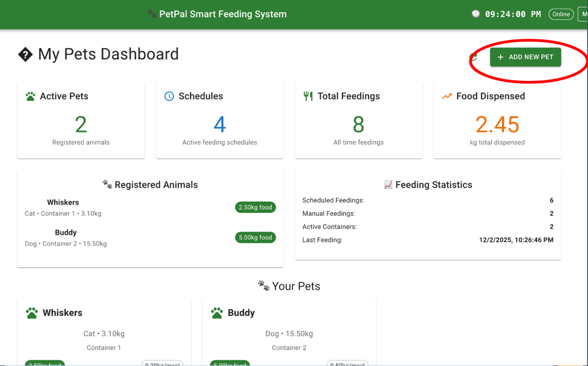
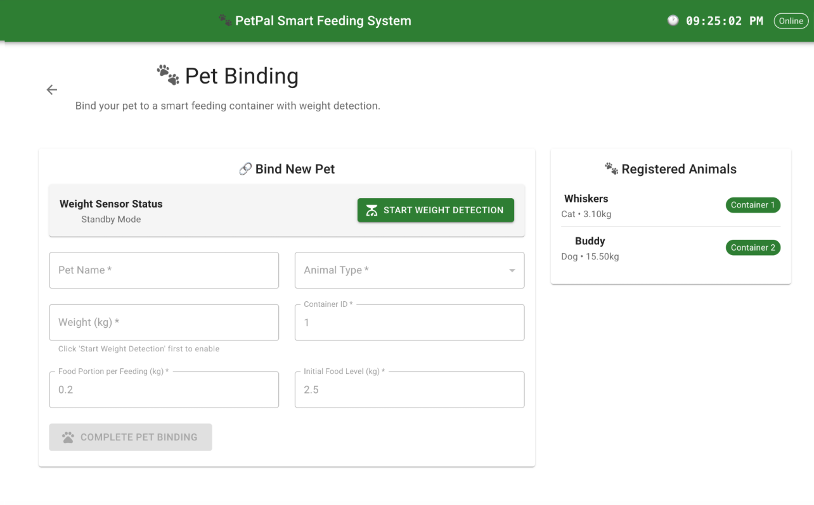
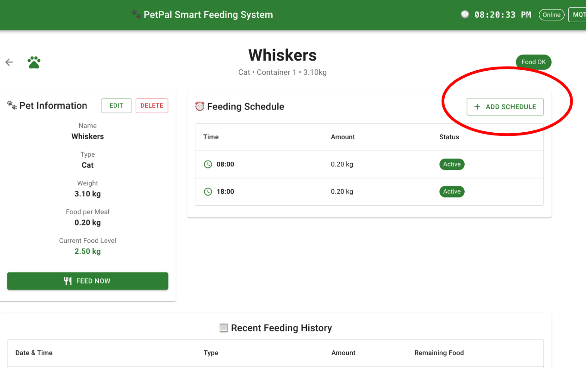
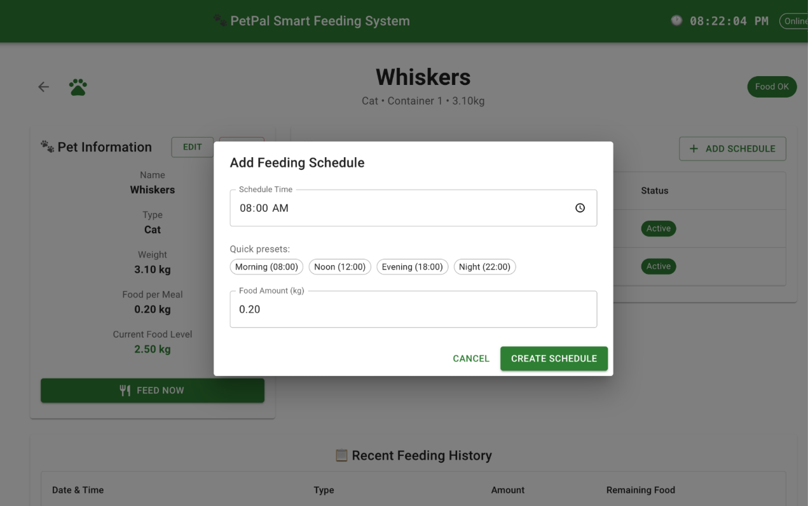
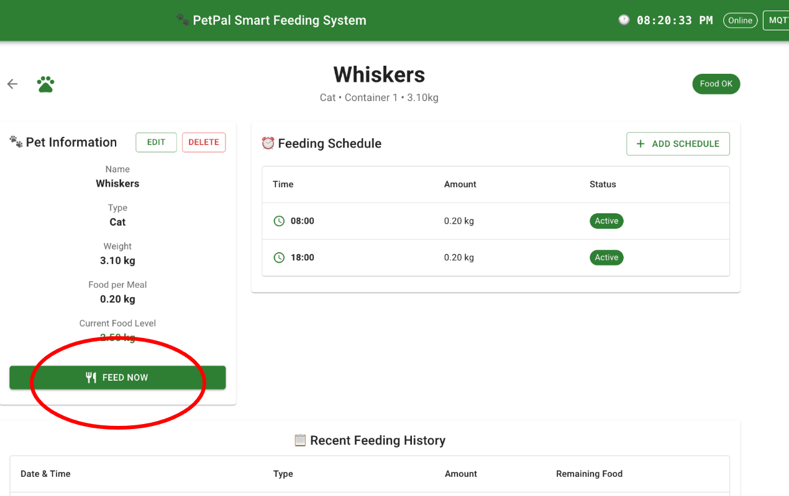

Motivation
In multi-pet households, individualized feeding is a persistent challenge. Different pets often require distinct diets due to factors such as weight management, allergies, or specific medical conditions. However, because many owners are away from home for most of the day, food is commonly prepared in advance and left for free access. Under this arrangement, the more dominant or opportunistic pet may consume food intended for another, leading to improper nutrition and potential health risks.
Although modern automatic feeders provide timed and portion-controlled dispensing, they generally lack the capability to identify which animal is accessing the food. As a result, existing solutions cannot ensure that each pet receives the correct type of food, making them insufficient for households with pets that have diverse dietary needs. These limitations create a clear need for a feeding system that can differentiate between animals and dispense appropriate food accordingly.
Project Description
An IoT-enabled smart automatic pet feeder designed for multi-pet households, capable of dispensing multiple types of food while preventing cross-feeding. The system uses weight sensors to distinguish between individual pets so that each animal receives its designated food type. It provides real-time feedback on a 16×2 LCD display—such as upcoming feeding countdowns, dispensing status, and alerts—and supports remote monitoring and control through a web-based dashboard.
Technical Breakdown
System Design Diagram

Software Components
The system is built using a modular architecture that separates the frontend, backend, and infrastructure layers. The frontend consists of a React-based web dashboard for pet management. The backend is powered by a Node.js API with REST endpoints for full CRUD operations, while MQTT enables real-time communication with hardware devices. Persistent data is stored in a PostgreSQL database, and the entire stack is deployed using Docker Compose for consistent, containerized deployment.
Hardware Components
| Component | Function | Purposes |
|---|---|---|
| ESP8266 Microcontroller | Main controller | Reads sensors, controls motors, updates LCD, communicates via MQTT |
| 16×2 LCD Display | Visual feedback | Shows pet name, feeding status, timestamps |
| Weight Sensor (load cell + HX711) | Pet identification | Detects and distinguishes pets by weight |
| Stepper Motor (×2) | Food dispensing | Precise food portion control per container |
| 3D printed feeding shaft & case | Food dispensing | PETG 3D printing material for direct contact with food, ensuring structural strength and food safety. |
MQTT Service
MQTT serves as the communication backbone of the system, enabling efficient, low-latency interaction between the backend and hardware. Key topics include motor1/motor2 for dispensing, weight_sensor for continuous weight data, weight_enable to toggle the sensing module, and lcd_display for screen messages.
Communication is bidirectional—the backend issues commands and the ESP8266 transmits sensor data back. All message exchange runs through a Mosquitto MQTT broker deployed via Docker.
Features
Pet Binding


Pet Binding measures the weight of the pet using a load cell and allocates the pet with its feeding container. The user clicks start/stop weight detection to enable the load cell. Once enabled, the weight appears in the weight column and keeps updating until stopped or time expired.
Scheduled Feeding


When a scheduled feeding time is reached, the backend scheduler publishes a standardized JSON instruction to either motor1 or motor2, including container ID, food amount, pet name, feeding type, and timestamp. The system follows a controlled workflow: weight sensor is enabled first, a valid reading is obtained, and only then is the motor instructed to dispense food.
Manual Feeding

Users can immediately dispense food via the web dashboard by selecting "Feed Now" with the desired container and portion size. The backend generates a JSON command with feeding_type: "manual" and publishes it to the appropriate MQTT motor topic. The motor controller bypasses weight-sensor checks and activates the stepper motor to dispense the portion.
Product Overview

The original prototype was designed using a CAD tool. The feeding shaft and case were 3D printed in Myhal.

In the final prototype, cardboard was used as the main frame to mount the LCD screen, motor, and feed axis. Wooden structures provided the base and a rigid surface for weight measurement.
System Evaluation
Experiments
A demo video systematically tests all main features. Test scenarios verify: a cat arriving before schedule triggers no dispensing; when two cats share the same feeding time, only the correct pet's container dispenses based on weight identification. The feeder simultaneously respects schedules and differentiates between pets.
Overall Performance
All components functioned normally during testing. The only issue was that gaps in the 3D printed structure were somewhat large, and small cat food caused jamming in the rotating shaft. Larger ingredients were used for the demonstration. The design successfully solves cross-feeding problems in real-life multi-pet households.
MQTT Communication
- Low latency: Weight sensor data publishes every 500ms with minimal delay
- Topic-based routing: Separate topics provide clear message isolation and prevent device interference
- Easy debugging: MQTT console allows real-time monitoring of all system communications
Containerization with Docker
The system is containerized using Docker Compose, providing a consistent environment across development and production. All services (frontend, backend, database, MQTT broker) can be managed independently, improving portability and simplifying maintenance.
Hardware Reliability
- Weight detection accuracy: ±0.1kg tolerance, sufficient for pet identification
- Motor control precision: Stepper motors (28BYJ-48) deliver accurate portions; upgradeable to stronger models for higher torque
- ESP8266 stability: Maintains stable WiFi and MQTT connections throughout extended testing
- LCD feedback: Real-time status display without requiring web access
Database Performance
PostgreSQL handled all CRUD operations efficiently, with cron-based schedule checks every minute, reliable feeding log storage, and data integrity enforced through foreign key constraints.
Areas for Improvement
- 3D printed structure: Redesign with smaller gaps to prevent food jamming
- Network dependency: Add offline mode for critical feeding schedules
- Pet Weight Gain Function: Adapt to weight gain curves of different breeds to avoid identification errors from natural growth
Conclusion
The system successfully demonstrates a scalable, IoT-based solution for multi-pet feeding automation. The combination of MQTT for device communication, Docker for service orchestration, and web-based control provides a robust and user-friendly platform that addresses real-world challenges in pet care management.